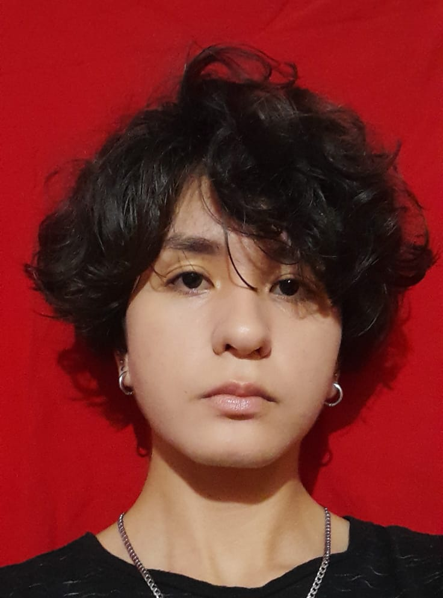

Estudiante de Ingeniería Informática con sólida formación en fundamentos de programación, estructuras de datos y desarrollo de software. Tengo experiencia en el desarrollo de proyectos académicos utilizando lenguajes de programación como Python, C/C++, Java, Racket, Prolog y Assembler. Busco una oportunidad para aplicar mis conocimientos, seguir creciendo profesionalmente y aportar valor a un equipo de trabajo.
| Pasantías realizadas | Referencia |
|---|---|
| Realizada en la casa comercial Violetta S.R.L durante 2 meses en al área de atención al cliente y marketing Las responsabilidades asignadas fueron ayudar a los clientes en las consultas que necesitar con respecto a algun producto y realizar flyers publicitarios del comercio para las redes sociales. | Gladys Brizuela Supervisora +595 984 663587 |
| Realizada en la institución educativa Eurosur durante 4 meses como ayudante de docente de Inglés Las responsabilidades asignadas fueron la de ayudar a los estudiantes en conjunto con la docentes en caso de que surgiera alguna duda durante el desarrollo de clase y explicar conceptos en ingles a los estudiantes que requerian ayuda. | Liz López Docente +595 981 773556 |